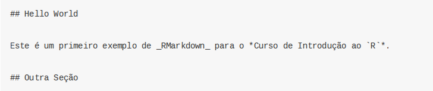
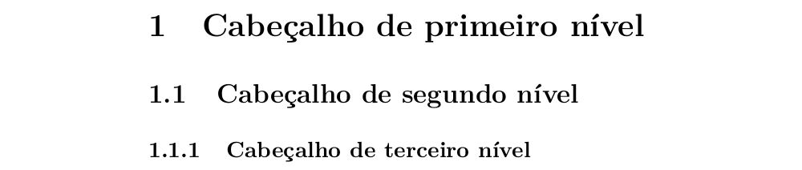

11 RMarkdown
Antes de falarmos sobre o que é RMarkdown, é interessante discutirmos sobre o Markdown.
Markdown é uma linguagem de marcação, ou seja, não é uma linguagem de programação. Linguagens de marcação dizem como algo deve ser entendido, mas não têm capacidade de processamento e execução de funções. Por exemplo, HTML é uma linguagem de marcação. Ela apenas diz como uma página web está estruturada, mas não executa nenhum processamento. O Markdown, da mesma forma, apenas informa como um documento está estruturado.
No entanto, a vantagem do Markdown é a sua simplicidade e a possibilidade de utilização de uma linguagem comum para a criação de vários tipos de documentos. Por exemplo, um mesmo código Markdown pode ser convertido para HTML, LaTeX (gera pdf’s), docx etc. Para isso, é necessário um conversor, que lê um código em Markdown e, considerando a escolha do output desejado, converte o arquivo para a linguagem desejada. Isto ficará mais claro com os exemplos.
E o que é o RMarkdown? Nada mais é do que a possibilidade de executar-se scripts em R (além de outras linguagens) e incorporá-los a um arquivo Markdown (extensão .md). O pacote knitr executará “pedaços” (chunk) de códigos e gerará um arquivo .md com os códigos e seus resultados. Na sequência, o pandoc, que é um conversor, converte-o para a linguagem desejada, gerando os arquivos nos formatos escolhidos (.html, .docx, .pdf, .odt). A figura abaixo ilustra o processo:

Processo - RMarkdow
Acesse este link para ver os tipos de formatos disponíveis no RMarkdown. É possível gerar documentos no formato Word, pdf formatados para revistas científicas, apresentações, dashboards etc.
11.1 Usos do RMarkdown
A seção anterior já deu algumas dicas sobre a utilidade do RMarkdown. Aqui elaboraremos um pouco mais sua funcionalidade.
Reprodutibilidade. Isto é importante quando um estudo é realizado. Pode ser que em algum momento após a realização do seu estudo outro analista/pesquisador deseje replicá-lo. Um documento que une o código às explicações pode ser fundamental neste momento.
Compartilhamento de informação. É possível que você tenha aprendido a usar um novo pacote e ache que ele pode ser interessante para outros colegas. Com o RMarkdown, você poderá criar um documento com exemplos de uso do pacote, facilmente compartilhável.
Documentação de Rotinas. A criação de rotinas para a realização de tarefas repetitivas é cada vez mais comum. No entanto, é importante que haja uma boa documentação da rotina para que você ou outro colega possa entender e dar manutenção à rotina no futuro.
Relatórios parametrizados. O RMarkdown facilita a criação de relatórios, inclusive dashboards, em que a estrutura é padrão, mas os dados dependem de um parâmetro. Por exemplo, relatórios de balança comercial por unidade da federação (UF). No caso, a UF seria um parâmetro que variaria de relatório para relatório.
11.2 Estrutura de um RMarkdown
---
title: "Primeiro Exemplo para o Curso de R"
author: "Paulo"
date: "`r format(Sys.time(), '%d de %B de %Y')`"
output:
html_document: default
pdf_document:
fig_caption: yes
fig_height: 3.5
fig_width: 7
number_sections: yes
lang: pt-br
---
```{r setup, include=FALSE}
knitr::opts_chunk$set(echo = TRUE)
options(OutDec = ",")
```
# Cabeçalho de primeiro nível
## Cabeçalho de segundo nível
### Cabeçalho de terceiro nível
# Hello World
Este é um primeiro exemplo de *RMarkdown* para o **Curso de Introdução ao `R`**.
## Outra Seção
Vamos executar um código:
```{r, fig.cap="Exemplo de Figura", collapse=TRUE}
library(ggplot2)
x <- rnorm(100)
y <- rnorm(100)
dados <- data.frame(x, y)
ggplot(dados, aes(x = x, y = y)) +
geom_point()
```
A média de x é `r mean(x)`.Vamos agora entender qual é a função de cada parte desse código.
YAML (Configurações):
---
title: "Primeiro Exemplo para o Curso de R"
author: "Paulo"
date: "23 de abril de 2019"
output:
html_document: default
pdf_document:
fig_caption: yes
fig_height: 3.5
fig_width: 7
number_sections: yes
lang: pt-br
---
O YAML é o responsável pelas configurações dos documentos. Basicamente, estamos informando qual é o título do documento, a data de criação, o nome do autor e o tipo de output que desejamos. No exemplo, está definido como output pdf_document e foram adicionadas opções para que as seções fossem numeradas e de tamanho das figuras. Caso quiséssemos um arquivo no formato Word (.docx), o output poderia ser modificado para word_document. Cada formato possui um conjunto de opções disponíveis. Nesse caso, é importante olhar-se a página de cada formato disponível na documentação do RMarkdown.
Code Chunks:

Os Code Chunks são pedaços de código em R que podem ser executados para gerar resultados que serão incorporados ao documento. Você pode inserir um chunk manualmente ou com o atalho CTRL + ALT + I. Dentro de {} é possível incluir uma série de opções relacionadas à execução do código. Abaixo, falaremos sobre algumas dessas opções.
Textos e Markdown:

Na figura acima, é mostrado como o texto se mistura com o código de markdown. Esse código markdown, quando convertido, gerará a formatação desejada. Na próxima seção, detalharemos o que cada marcação faz.
11.3 Renderizando um documento
Há duas formas de se renderizar um documento .Rmd. A primeira é via função render() do pacote rmarkdown.
render(input, output_format = NULL, output_file = NULL, output_dir = NULL,
output_options = NULL, intermediates_dir = NULL,
runtime = c("auto", "static", "shiny"),
clean = TRUE, params = NULL, knit_meta = NULL, envir = parent.frame(),
run_pandoc = TRUE, quiet = FALSE, encoding = getOption("encoding"))Veja no help a função de cada argumento. Essa função é especialmente importante quando a renderização de um RMarkdown está inserida dentro de uma rotina. Por exemplo, pode-se usar a função render() dentro de um loop para criar-se vários pdf’s a partir de um relatório parametrizado.
A outra opção é usando o botão knit, disponível na interface do RStudio.

Botão Knit
11.4 Sintaxe
Abaixo estão os principais elementos de sintaxe do RMarkdown. Vários são autoexplicativos. Para alguns, faremos alguns comentários:
- Cabeçalhos:
# Cabeçalho de primeiro nível
## Cabeçalho de segundo nível
### Cabeçalho de terceiro nívelO resultado, em um documento com output definido como pdf_document, seria:

- Estilo de texto:
*Itálico* e **Negrito**Itálico e Negrito
- Citações:
> Aqui vai um texto para citaçãoAqui vai um texto para citação
- Código no texto:
`mean(x)`mean(x)
- Código processado no texto:
A opção abaixo é importante para que resultados do R possam ser incorporados diretamente ao texto do documento. Para demonstração, foi necessário darmos um espaço entre a aspa e o código, mas o correto é não haver esse espaço.
` r mean(c(2, 3, 4)) `3
- Imagens:
 - Listas não ordenadas:
* Item a
* Item b
+ Subitem b1
+ Subitem b2- Item a
- Item b
- Subitem b1
- Subitem b2
- Listas ordenadas:
1. Item 1
2. Item 2
3. Item 3
i. Item 3a
ii. Item 3b- Item 1
- Item 2
- Item 3
- Item 3a
- Item 3b
- Tabelas:
--------: indica que a Coluna 1 está alinhada à direita. :------------: indica que a coluna está centralizada. Alguns pacotes do R fornecem funções para a geração de tabelas a partir de data.frames e matrizes. Veja:
Coluna 1 | Coluna 2
-------------: | :-------------:
10 | Brasil
20 | China
Fonte: MDIC.| Coluna 1 | Coluna 2 |
|---|---|
| 10 | Brasil |
| 20 | China |
Fonte: MDIC.
--------------------------------------------------------------------
Column 1 Column 2
------------------------------------------------------ ------------
I want the contents of this cell to fit into one line Word1 Word2
------------------------------------------------------ ------------| Column 1 | Column 2 |
|---|---|
| I want the contents of this cell to fit into one line | Word1 Word2 |
x <- letters[1:3]
y <- LETTERS[1:3]
knitr::kable(data.frame(x, y), align = 'cc')| x | y |
|---|---|
| a | A |
| b | B |
| c | C |
- Links:
Site do [MDIC](www.mdic.gov.br)Site do MDIC
- Linha horizontal ou Quebra de Página:
***
---- Equação:
Modelo linear simples: $y_i = \alpha + \beta x_i + e_i$Modelo linear simples: \(y_i = \alpha + \beta x_i + e_i\)
- Equação em Bloco:
Modelo linear simples: $$y_i = \alpha + \beta x_i + e_i$$Modelo linear simples: \[y_i = \alpha + \beta x_i + e_i\]
11.5 Opções de Chunk
Os chunks de códigos ({r, ...}) que possuem uma série de opções. Elencaremos aqui as principais. Para a lista completa, veja este link.
| Opção | Valor Padrão | Descrição |
|---|---|---|
| eval | TRUE | Indica se o código deve ser executado |
| include | TRUE | Indica se o código deve ser exibido no documento final. Os resultados não serão apresentados. |
| collapse | FALSE | Indica se o código e os resultados do chunk devem ser colapsados em um bloco único. |
| echo | FALSE | Indica se o código será exibido no documento final. Os resultados serão apresentados. |
| results | markup |
Se hide, os resultados não serão exibidos. Se hold, os resultados serão exibidos ao final do chunk. Se asis, os resultados não serão formatados, sendo mostrados os resultados “brutos” (código html, tex, …). |
| error | TRUE | Indica se mensagens de erros serão exibidas. |
| message | TRUE | Indica se mensagens geradas pelo código serão exibidas. |
| warning | TRUE | Indica se avisos gerados pelo código serão exibidos. |
| fig.cap | NULL | Título de gráfico referente ao chunk. |
| fig.height | 7 | Altura para gráficos criados pelo código (em polegadas). |
| fig.width | 7 | Largura para gráficos criados pelo código (em polegadas). |
11.6 Principais Formatos
11.6.1 HTML
A HTML é a linguagem de marcação para construção de páginas web. Assim, se criarmos um documento e escolhermos como opção de output html_document, o resultado será uma página a ser aberta em browsers. Outros formatos do markdown, como flexdashboard e ioslides, também geram páginas html. Cada tipo de formato tem um conjunto de aspectos específicos. Abaixo listamos os principais para html:
A aparência e o estilo são definidos por um arquivo no formato
css. Isso impõe uma dificuldade adicional para a formatação do documento. O Rmarkdown fornece alguns temas e pacotes que também podem fornecer documentos com alguma formatação de estilo (ver prettydoc);Único formato que aceita htmlwidgets (o próprio nome indica isso).
O código markdown incluído no arquivo .Rmd é convertido pelo pandoc, gerando um documento estruturado com código html. Vejamos abaixo o código em RMarkdown:

Código RMarkdown para gerar um arquivo html
Após o processamento, será gerado o seguinte código html:
Exemplo de código HTML
Esse código é interpretado pelo navegador e gera o seguinte resultado:
Exemplo de formato HTML
11.6.2 PDF
Para a criação de PDFs pelo RMarkdown, utiliza-se o LaTeX (pronuncia-se: Lah-tech or Lay-tech), que é um sistema de preparação de documentos muito utilizado pela comunidade científica. Inicialmente, o RMarkdown abstrai para o usuário a necessidade de saber-se essa linguagem. No entanto, como no HTML, se você quiser avançar na estrutura do documento e nos estilos será necessário aprender esta linguagem, pelo menos o suficiente para resolver o seu problema.
Entre as vantagens do LaTeX estão:
Numeração automática de seções (e os demais níveis) e de equações;
Criação automática de legendas com base em arquivos
.bib;Facilidade de referências cruzadas no documento.
Como no caso do HTML, é possível usar templates. Isso é bastante útil para a criação de artigos científicos, que devem ser padronizados. Além disso, relatórios de instituições podem ser padronizados. Assim, basta que alguém crie um template e os demais poderão criar documentos com a mesma estrutura usando apenas o RMarkdown.
LaTeX é uma versão mais amigável de TeX. Ou seja, LaTeX é uma linguagem em um nível maior do que TeX. Como no R, existem diversos pacotes em LaTeX que fornecem comandos para facilitar a edição de alguma parte do documento. Por exemplo: o pacote fancyhdr fornece comandos que facilitam a construção de cabeçalhos e rodapés. Abaixo está um pequeno código para se ter uma noção sobre essa linguagem:
\documentclass{article}
\title{Exemplo 1}
\author{Nome do Autor}
\date{\today}
\begin{document}
\maketitle
\newpage
\section{Introdução}
Aqui vai o texto!
\end{document}
Basicamente, o código acima define a classe do documento como artigo, o título, o nome do autor e a data para o dia em que o documento for compilado. Depois, inicia-se o documento, criando o título (inclui título, autor e data), definindo uma quebra de página e a seção introdução.
11.6.2.1 Instalações necessárias
Para criar documentos PDF no RMarkdown é preciso ter uma instalação TeX disponível. Para isso, é preciso baixar uma distribuição compatível com o seu sistema operacional. Nesta página estão listadas as distribuições disponíveis por sistema operacional. No Windows é comum usar a distribuição MiKTeX.
11.6.2.2 Exemplo
Como no HTML, mostraremos primeiramente o código em RMarkdown:

Código RMarkdown para gerar um arquivo html
Esse código gerará um arquivo intermediário com a extensão .tex. Este arquivo terá o seguinte código:
Código tex gerado
Após a compilação, o seguinte documento é gerado:
Exemplo de output pdf
11.6.3 Word
A geração de word segue a geração dos demais formatos. No entanto, templates apenas funcionam para definir estilos que serão usados no documento. Atualmente, devido a limitações do conversor (pandoc), é difícil ter-se total acesso à formatação do documento.
Código RMarkdown para gerar um arquivo word
11.7 Excercícios
Crie um RMarkdown com o formato HTML para output. Neste documento, faça um mini tutorial sobre algum pacote que você aprendeu no curso ou outro pacote que você tenha conhecido. Crie as seções adequadamente e, se for o caso, crie tabelas.
Crie um novo RMarkdown e explique o processo de criação de um gráfico usando o ggplot2. O ideal é criar um novo gráfico, mas fique livre para utilizar algum exemplo deste material.
Utilizando o pacote
WDI, crie uma visualização com o pacotedygraphspara a série de renda per capita do Brasil (BRA). Coloque um título no seu documento e faça com que o código não seja apresentado ao leitor.A partir do exemplo anterior, crie um parâmetro chamado
country_codeno cabeçalho de configuração (yaml). Este parâmetro será usado para selecionar-se o país base para a visualização.Crie um vetor com cinco códigos de países. A partir deste vetor, utilize a função render para criar um arquivo para cada país.